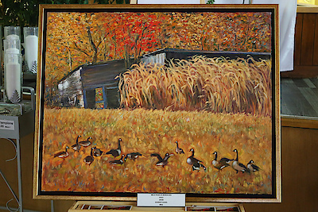
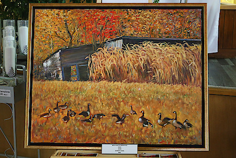
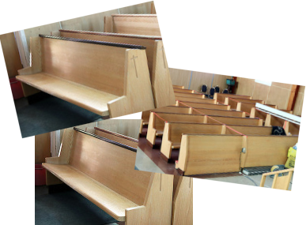

Un tableau de l'artiste peintre Jeannot Hamel, de La Sarre, sera tiré pour Noël. Les billets sont en vente au coût de $ 5. Les profits de cette vente iront à la Fabrique Saint-Paul de Senneterre.


Un tableau de l'artiste peintre Jeannot Hamel, de La Sarre, sera tiré pour Noël. Les billets sont en vente au coût de $ 5. Les profits de cette vente iront à la Fabrique Saint-Paul de Senneterre.
Nous avons un besoin urgent d’un président au conseil de Fabrique.

Idéal pour projet ou pour décors
150$ petit / 250$ grand
(rabais sur 2 et plus)
Contactez Murielle au (819) 737-2045
(sur les heures de bureau (mar-jeu))
fabriquestpaul@yahoo.ca
Faites vite, produit en demande !
Si vous êtes intéressé(e)s à rejoindre la chorale de l’église St-Paul, vous êtes les bienvenu(e)s ! Nous avons besoin de relève. Alors adressez-vous au secrétariat de la Fabrique (819-737-2045).
Notre mission est d’apporter de la joie aux personnes de notre entourage, surtout celles qui sont seules ou malades. Nous avons besoin de bénévoles pour remplir ce mandat.
Comment ? En soulignant les fêtes (Noël, Pâques, anniversaires), visites, téléphones et toutes initiatives pour contrer l’isolement de nos aînés.
Si vous êtes intéressé(e)s à joindre l’Équipe de la Joie, vous pouvez donner votre nom au secrétariat au 819-737-2045. Merci !
Compilé avec Nanoc 4.12.7.
© 2022 Christian Bélisle 🇨🇦️